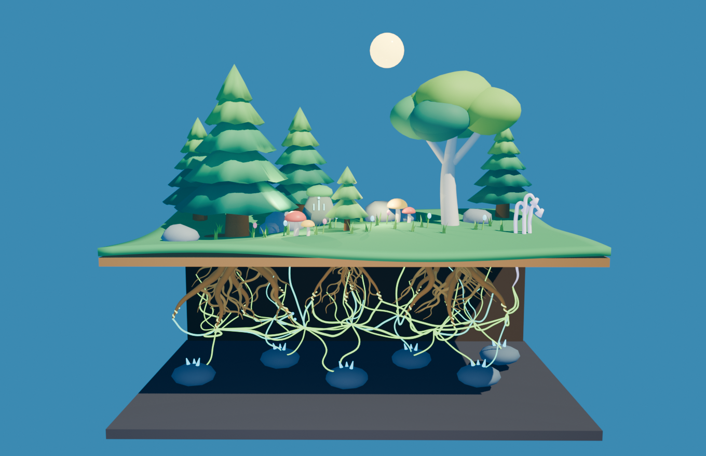

An underground field guide
The Wood Wide Web
How trees, fungi, and living soil sustain forests and our food beneath our feet
0/11 Lore Sprout Scout
Growing the forest…
Lore tablets
Explain the whole secret in a minute
Four core truths connecting wild forests to the soil that grows our food.
-
Mushrooms aren’t just food, they’re only the fruit
Nearly the entire fungus lives underground as miles of threads weaving tree roots together, while mushrooms are only its seasonal fruit.
-
Sugar trades for rock minerals
Trees pay fungi with sunlit carbon sugar; fungi wrap around or reach inside root cells to pay back deep water, nitrogen, and phosphorus.
-
One web links the neighborhood
Shared fungal bridges let extra sugar reach shaded seedlings and carry chemical bug-attack warnings between neighboring trees.
-
Living soil feeds our future
Chemical fertilizers and pesticides rupture this 400-million-year partnership and exhaust farmland; regenerative soil care restores it.
Campfire riddles
Four questions listeners always ask
Open a scroll to reveal the real forest & soil science.
Do big trees “think” like brains when feeding shaded seedlings?
No brains required. Sugar naturally moves from sunlit, sugar-rich crowns toward shaded, hungry roots, and keeping young neighbors alive preserves future partners for the shared fungal web.
What happens if a plant or fungus tries to shortchange the deal?
Both sides bargain like an honest market: fungi route more rock minerals toward generous sugar-paying roots, while plants pinch off sugar to root tips where fungi hoard nutrients.
How fast do underground bug-attack warnings travel?
Roughly 24 to 48 hours, far slower than animal nerves, yet plenty fast enough to beat leaf-eating insects moving from tree to tree.
Why do chemical fertilizers and pesticides ruin soil fertility over time?
Over 400 million years ago, the first land plants had no roots at all. Fungi fed them, and roots evolved to expand that bond. Chemical pesticides harm delicate fungal threads, while synthetic fertilizers give plants free surface minerals so they stop paying sugar and break the partnership. Without fungi unlocking deep trace minerals and holding soil together, land degrades and food costs rise, which is why organic, regenerative farming is vital for our future.
Verified Science & Field Action
Peer-Reviewed Research Library
Fact-checked landmark studies behind each chapter, plus how regenerative soil care protects this ancient web.
- Remy et al. · PNAS (1994) 400-million-year-old root and fungus fossils Fossilized early land plants before true roots evolved, already partnering inside their cells with fungi.
- Jongmans et al. · Nature (1997) Rock-eating fungi unlock stone minerals Microscopic tunnels carved into mineral grains by fungal threads where woody roots cannot fit.
- Kiers et al. · Science (2011) Fair two-way sugar & mineral trading Plants reward mineral-rich fungal partners with more carbon and cut off payment when minerals come free.
- Simard et al. · Nature (1997) Carbon sharing between forest species Field experiments tracing carbon moving underground between fir and birch, especially toward shaded trees.
- Babíková et al. · Ecology Letters (2013) Underground pest-attack warnings Shared fungal bridges transmit chemical warning cues from insect-bitten plants to unattacked neighbors.
- Edlinger et al. · Nat. Ecol. Evol. (2022) Chemical farming vs. living fungal soil Across 150 farm fields, synthetic inputs & pesticides crippled fungal mineral delivery while organic care preserved it.
How to restore the web: Support organic and regenerative farms, feed gardens with compost instead of synthetic chemical fertilizers, skip harsh pesticides and fungicides, and keep living roots in the ground year-round.